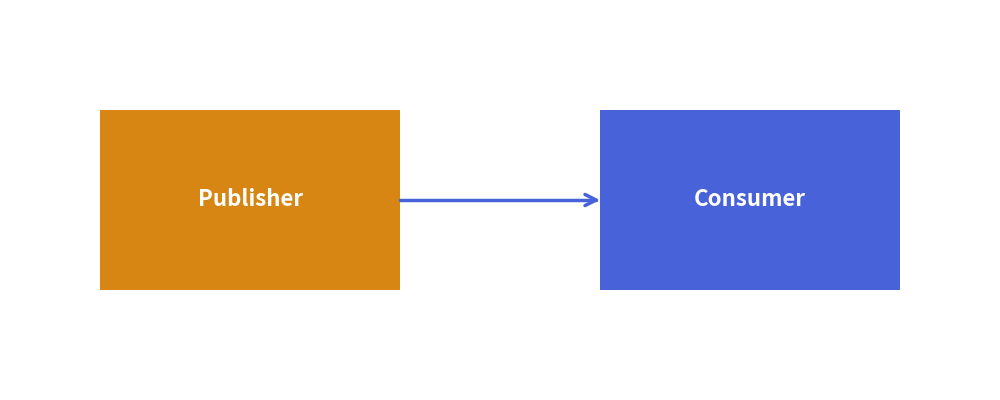

Embedded Code Blocks (drawlib)
Drawlib allows you to embed Python drawing scripts directly into Markdown documents using the drawlib code fence. The builder compiles these blocks into vector images during site or document builds, automatically generating HTML elements, companion image files, and syntax-highlighted code blocks.
1. Basic Code Fence Syntax
Embedded drawing blocks use the drawlib language identifier:
from drawlib.canvas import save, setup
from drawlib.shapes import rectangle
from drawlib.lines import line
from drawlib.styles import Styles
setup(width=100, height=40)
rectangle((25, 20), width=30, height=18, style=Styles.AccentFlat, text="Publisher", text_style=Styles.WhiteBold)
rectangle((75, 20), width=30, height=18, style=Styles.PrimaryFlat, text="Consumer", text_style=Styles.WhiteBold)
line((40, 20), (60, 20), arrowhead="->", style=Styles.PrimaryBold)
save()

2. Header Attributes Reference
Options are specified space-delimited on the opening code fence line:
``` drawlib [DISPLAY_MODE] [WIDTH] [ALIGNMENT] [file:NAME] [caption:"TEXT"]
(Note: In authoring, replace the brackets with your desired configuration options without the space after the backticks.)
2.1 Code Display Modes
| Option | HTML Rendering Behavior | Markdown Rendering Behavior |
|---|---|---|
hide-code (default) |
Displays image only (<figure><img ...></figure>). |
Replaces block with standard Markdown image link. |
show-code |
Displays syntax-highlighted code block followed immediately by the image. | Renders code block followed by image link. |
fold-code |
Displays image followed by a collapsible dropdown (<details><summary>Source Code</summary>...</details>). |
Displays image followed by collapsed details dropdown. |
2.2 Dimensions & Alignment
- Width: Specify pixel width (e.g.
500px,650px) or percentages (e.g.80%,100%). - Alignment:
center(default): Centered horizontally on the page.left: Aligned to the left margin.right: Aligned to the right margin.
2.3 Captions & Image Filenames
- Caption:
caption:"Description of diagram"wraps the rendered figure in semantic HTML<figure>and<figcaption>elements with clean typography. - Custom Filename: By default, Drawlib numbers companion images sequentially (
1.png,2.png). Specifyfile:my_diagram.pngto set an explicit filename in the output directory.
[!TIP] Best Practice for AI & Automation: Always specify an explicit
file:<name>.pngattribute for every embedded block. Named blocks prevent numbering shifts when diagrams are inserted or removed, produce clean asset directories, and allow individual diagrams to be verified deterministically viadrawlib show <file> <image_name.png>.
3. Working Directory & Path Resolution
When compiling embedded code blocks:
- Working Directory (
os.chdir): Drawlib automatically sets the current working directory to the directory containing the Markdown document. - Relative File Paths: Relative paths to local assets (e.g.
image("../_assets/logo.png")) resolve identically whether runningdrawlib buildor testing withdrawlib show. - Module Resolution (
sys.path): The document directory and project root are added tosys.path, allowing you to import local helper modules (such asimport stylesorimport utils).
4. Canvas Isolation & Sandbox
- Automatic Clear: Drawlib invokes
canvas.clear()before executing each embedded code block. State, shapes, and settings from a preceding diagram will never contaminate subsequent blocks. - Explicit Imports: Embedded drawing blocks require explicit imports (e.g.
from drawlib.shapes import circle,from drawlib.styles import Styles). This guarantees clean namespace boundaries, full IDE autocompletion support, and self-contained reproducibility. - Automatic Capture &
save()Handling: The Document Builder automatically captures the canvas and renders the companion image to disk when a block finishes execution. Callingsave()within a block is optional; if present, the engine safely overrides it as a no-op to prevent duplicate file writes or collisions. In complete examples, includingsave()(without arguments) is recommended to maintain 100% copy-paste portability with standalone Python scripts.
5. Rapid Verification Workflow
Do not run a full site build to verify minor coordinate changes. Inspect individual code blocks instantly using drawlib show:
# Preview block #1 of docs_src/my_doc.md with coordinate grid:
uv run drawlib show docs_src/my_doc.md 1 -g -o .drawlib/scratch/preview.png